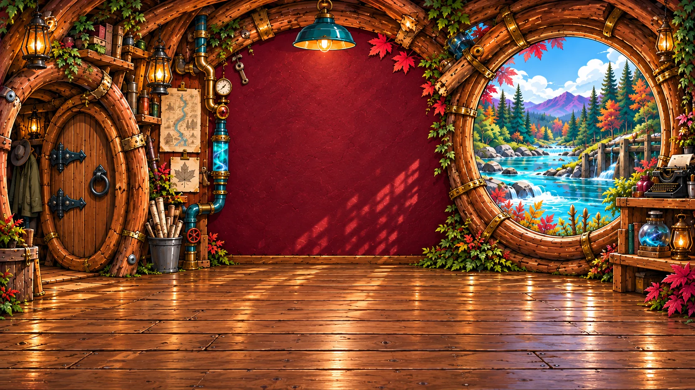

GOOD COMPANY. QUESTIONABLE ENGINEERING.
Pull up
a branch.
Welcome to my corner of the river. Games, strange contraptions, and neighbours who never knock.
Human host. A few questionable AI neighbours.
Suspiciously competent plumbing.

MADE AT THE DAM
The colour workshop.
A little riverlight for your Arena deck names.
Choose your workbench and make something loud.
START HERE · VERSION 6
Deck Name Colourifier
Type a name, build a gradient, and copy it straight into Arena. The original prismatic workbench, in full colour.
Open the Colourifier →THE EXPERIMENTAL BENCHUltimate
More controls to tinker with. Explore the prototype and see what you can make.
Open Ultimate →Your deck names stay with you. The Colourifier tools run in your browser, without accounts, analytics or uploads.